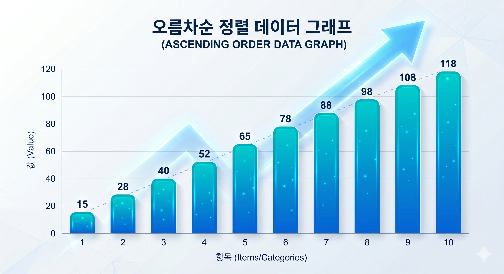
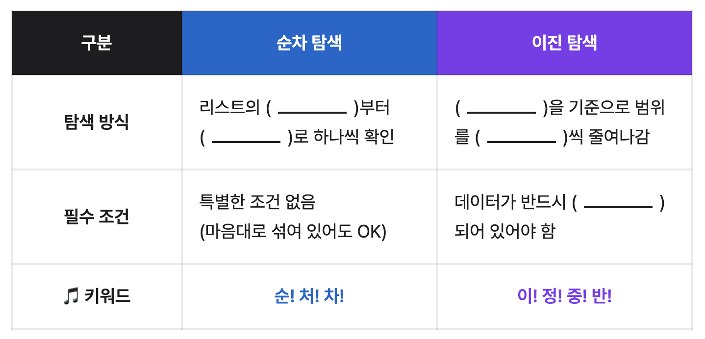
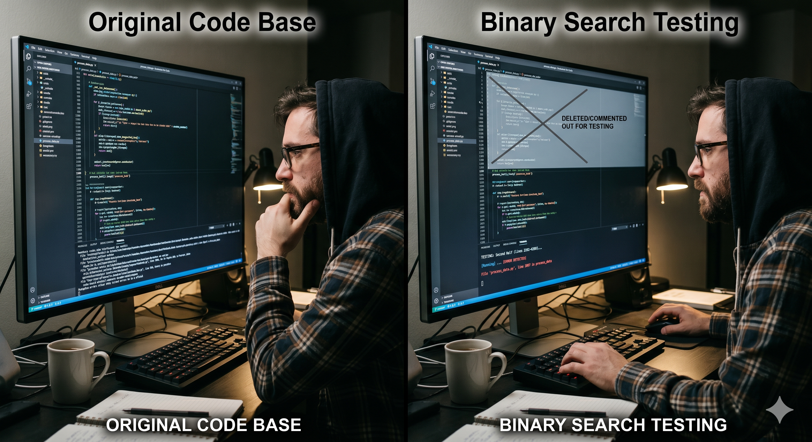

"이러면 며칠이 걸리겠죠?"
첫 장부터 한 장씩 넘기면 너무 오래 걸립니다.
책의 절반을 과감하게 찢어서 버리면 어떨까요?
순식간에 종이 한 장만 남는 엄청난 속도 차이를 두 눈으로 확인해봅시다!
1. 선형 데이터 구조에서 특정 요소를 찾을 때 사용되는 두 가지 방법인
순차 탐색과 이진 탐색의 과정을 구체적인 예시를 들어 설명할 수 있다.
2. 주어진 자료가 일정한 기준에 따라 정렬되어 있는지 확인하고, 데이터를 찾는 데
필요한 탐색 횟수를 직접 계산하여, 두 탐색 방법의 효율성을 비교할 수 있다.
3. 일상생활의 문제 상황이 주어졌을 때, 두 가지 탐색 방법 중 상황에 적합한
탐색 방법을 선택하고, 데이터를 찾아가는 과정을 단계별로 분석하여 요약할 수 있다.

오름차순으로 정렬되어 있는 데이터
1. 순차 탐색 (처음부터 1칸씩)
2. 이진 탐색 (가운데 확인 후 절반 버리기)
순처차, 이정중반! 🎵
순! 처! 차!
순차 탐색은 처음부터 차례대로!
이! 정! 중! 반!
이진 탐색은 정렬 확인, 중간부터 반씩 버려!

💡 이진 탐색에서는 왜 반씩 버려도 되는지 생각해봐요!
업다운 게임으로 이진 탐색 분석하기!
짝꿍이 1~100 사이의 비밀 숫자를 하나 정합니다.
- 순차 탐색 룰: "1이야? 2야? 3이야?"
- 이진 탐색 룰: "50보다 커? 작아?"
💡 만약 비밀 숫자가 50보다 크다는 정보를 얻었으면
1~50은 굳이 확인할 필요 없겠죠?
교과서 속 대표적 사례 (p.113) 📚
- 도서관에서 책 찾기: 책들이 정렬되어 있지 않다면 처음부터 차례대로 살펴봐야해요
- 사전에서 단어 찾기: 사전의 중간을 펼쳐서 찾고자 하는 단어가 앞쪽에 있는지 뒤쪽에 있는지 판단할 수 있어요
모둠별로 모여서 탐색 알고리즘을 적용할 수 있지만,
교과서에 없는 새로운 사례를 찾아서 활동지에 적고 발표해봐요!

학습 내용 정리 OX 퀴즈
Q. 순차 탐색은 정렬되지 않은 리스트에서만 사용할 수 있어요.
A. ( O / X ) ?
활동지의 스스로 점검하기를 통해
오늘 나의 학습 상태도 함께 알아봐요! 😎

코드 오류 탐색 시 절반씩 분할해서 테스트를 진행하면 굉장히 빨라져요! ✈️
다음 시간: 단원 복습 및 형성평가
드디어 이 단원의 마지막 시간입니다. 모두 수고하셨어요! ☺️
본 자료의 이미지는 구글 AI로 생성되었으며,
파일 내부에 AI 생성 콘텐츠임을 나타내는 고유한 디지털 워터마크(SynthID)가 포함되어 있습니다.